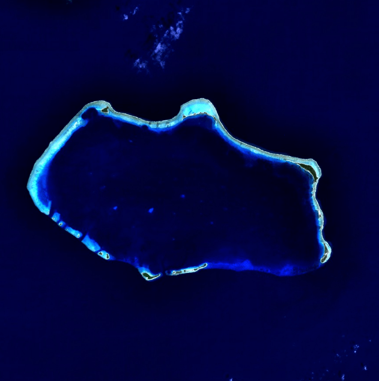

The series takes place primarily in the benthic underwater city of Bikini Bottom located in the Pacific Ocean beneath the real-life coral reef known as Bikini Atoll. Its citizens are mostly multicolored fish who live in buildings made from ship funnels and use "boatmobiles", amalgamations of cars and boats, as a mode of transportation. Recurring locations within Bikini Bottom include the neighboring houses of SpongeBob, Patrick, and Squidward; two competing restaurants, the Krusty Krab and the Chum Bucket; Mrs. Puff's Boating School, which includes a driving course and a sunken lighthouse; the Treedome, an oxygenated glass enclosure where Sandy lives; Shady Shoals Rest Home; a seagrass meadow called Jellyfish Fields; and Goo Lagoon, a subaqueous brine pool that is a popular beach hangout.
When the SpongeBob crew began production of the series' pilot episode, they were tasked with designing stock locations, to be used repeatedly, where most scenes would take place like the Krusty Krab and SpongeBob's pineapple house. The idea was "to keep everything nautical", so the crew used plenty of rope, wooden planks, ships' wheels, netting, anchors, boilerplates, and rivets to create the show's setting. Transitions between scenes are marked by bubbles filling the screen, accompanied by the sound of rushing water. The series features "sky flowers" as a main setting material. When series background designer Kenny Pittenger was asked what they were, he answered, "They function as clouds in a way, but since the show takes place underwater, they aren't really clouds. Because of the Tiki influence on the show, the background painters use a lot of pattern." Pittenger said the sky flowers were meant to "evoke the look of a flower-print Hawaiian shirt".